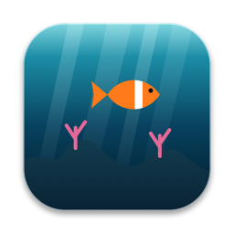

DriftpanePrivacy Policy
No accounts, ads, analytics or tracking, and nothing is sent to us.
This policy explains how Driftpane (“the app”), a Mac app that draws live 3D scenes on your desktop, behind your icons, developed by Kevin Fitzgerald, handles information.
Information we collect
Nothing is sent to us. One thing leaves your Mac, and only if you set a place for the weather: that place’s approximate coordinates (the coordinates Apple’s geocoder gives for the city or ZIP code you typed, or your position from Location Services rounded to about a kilometer), sent to MET Norway (api.met.no) with each forecast request so it can return the forecast for that spot. They aren’t linked to you, used for tracking or advertising, or sent anywhere else. When you type a place, Apple’s geocoder receives the text to find it. Driftpane has no analytics, advertising, crash-reporting or tracking tools.
Information stored on your Mac
To work, the app keeps the following on your Mac only:
- Your settings: the scene you picked, each scene’s options, Shuffle Daily, power, quality and idle-scene choices
- The place for the weather: the city or ZIP code you typed and its coordinates, or your position from Location Services rounded to about a kilometer
- The last weather forecast, so scenes keep the weather for a while offline
- Your license key, in your Mac’s Keychain
Your settings and place are in Driftpane’s preferences, the last forecast is in its Caches folder (both inside its own container in your user Library, under Containers) and the license key is in your Keychain. None of it is sent to us. Clearing the place in Settings › Weather removes it; deleting the app and its container removes the rest.
Your location (optional)
Driftpane works without a place: scenes then use fair weather and the sky for your time zone. For the real weather and sky, type a city or ZIP code in Settings › Weather, which Apple’s geocoder turns into coordinates (no permission needed), or turn on Use my location, which asks macOS for Location Services. Driftpane rounds your position to about a kilometer. It works out the sun and moon on your Mac, and only the coordinates go to MET Norway to ask for the forecast (below). You can turn it off, or clear the place, at any time.
Weather
While a scene that shows weather is on screen and a place is set, Driftpane asks MET Norway (api.met.no) for the forecast at that place, at most once an hour. The request carries only the coordinates, cut to 4 decimal places, and the app’s name and version. Weather data: MET Norway, CC BY 4.0. Earth from Orbit uses NASA’s Blue Marble and Black Marble imagery (NASA Earth Observatory), bundled with the app; it doesn’t download anything.
Network
Driftpane is sold directly through Gumroad. Its only network requests are the license check with Gumroad (your license key, when you enter it and about once a week), checks for app updates at fitztoppicks.com, the MET Norway forecast described above, and Apple’s geocoder when you type a place. None of them sends anything about what’s on your screen or which scenes you watch. No analytics.
Purchases
Driftpane is sold directly through Gumroad, which handles payment and sends your receipt and license key; we never see your payment details. The app sends your license key to Gumroad to check it, and nothing else.
Children’s privacy
Because the app collects no personal information from anyone, it does not knowingly collect personal information from children.
Changes to this policy
If this policy changes, the new version will be posted on this page with a new effective date. If the app ever begins collecting data, this policy will be updated before that happens.
Contact
Questions about this policy or the app: k.fitzgerald310@gmail.com.